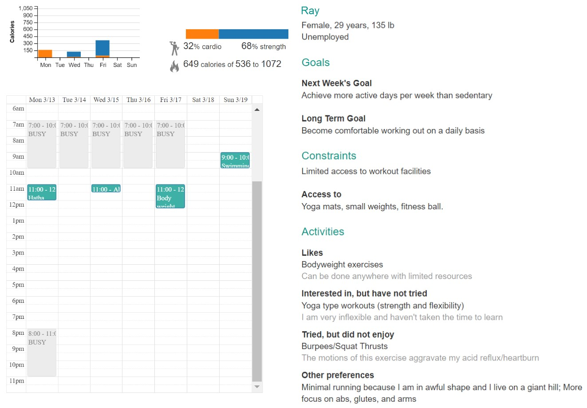

Crowdsourcing Expert Quality Exercise Planning with Friends and Crowd Workers
Research by Elena Agapie and Professors Hsieh and Munson shows that friends and strangers can develop basic action plans for others to exercise more, eat healthier or save money. Friends can customize plans to people's everyday interests, but they need to know their friend's routines in more detail than they normally observe. In contrast, strangers tend to push people towards new and more diverse ideas because they bring in different perspectives. People sometimes prefer turning to strangers for help, being more comfortable sharing their habits with someone who does not know them.
The research team further investigated the quality of advice strangers can provide. In a study they demonstrated that non-expert strangers can provide expert quality physical activity plans when provided with technological support. The team designed and built a tool, CrowdFit. CrowdFit enables an online helper, such as a worker from a task marketplace like Mechanical Turk, to create an actionable plan, that follows expert techniques and fits the needs of the recipient. CrowdFit guides people about how much exercise to recommend, of what type, and when to schedule it. To tailor the plan to a person's needs, CrowdFit captures the person's goals, preferences, constraints, routines, and schedule. In an evaluation, helpers using CrowdFit were able to create plans of higher quality than those who did not have access to this system. Helpers successfully followed several expert guidelines incorporated in CrowdFit, though sometimes they had to compromise expert recommendations with a person's preferences and current activity level.
This research shows a tool can support people in getting high quality advice from friends and online connections. By breaking down complex tasks like exercise planning, providing feedback to the helpers, and guiding them with easy to follow interactions, a novice can provide expert-level advice.
Project Publications
Crowdsourcing Exercise Plans Aligned with Expert Guidelines and Everyday Constraints E Agapie, B Chinh, L Pina, D Oviedo, M Welsh, G Hsieh, S Munson CHI 2018 • pdf
PlanSourcing: Generating Behavior Change Plans with Friends and Crowds E Agapie, L Colusso, S Munson, G Hsieh CSCW 2016 • pdf